Tarea 1: Descarga de una imagen de Wikimedia Commons
Imagen seleccionada:
_Butrint.jpg)
Nombre del fichero:
Hellenic_pond_turtle_(Emys_orbicularis_hellenica)_Butrint
formato de la imagen:
JPG
Tamaño de la imagen:
7,78 MB
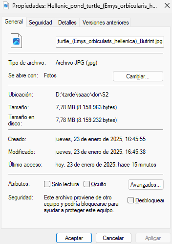
Resolución de imagen:
4330 X 2886
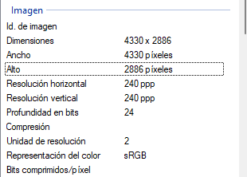
Autor:
Frank Schulenburg
Tarea 2: Análisis gimp
Memoria comsumida:
116,5 MB
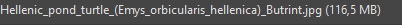
Exportar en PNG
_Butrint_PNG.png)
Tamaño png:
17,2 MB
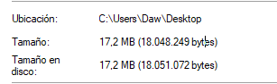
Imagen PNG con transaparencia
_Butrint_PNG_transaparencia.jpg)
Tamaño TIFF:
20,8 MB
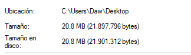
Formato de pryecto nativo:
El XCF eXperimental Computing Facility
Tarea 3: reescalado de imagen
Imagen reescalada a 500 px de anchura
!!!La imagen tiene el atributo height a 500 px para poder verse correctamente
Imagen reescalda a 500 px de anchura con compresión sin perdida
Exportada a png:
Tarea 4: Exportar JPEG en distintas calidades
Duda: En el apartado 5, me pide básicamente lo mismo que voy a
hacer ahora o al menos esto es lo que estoy entendiendo
Exportada a JPEG 500 px con 90 de calidad:
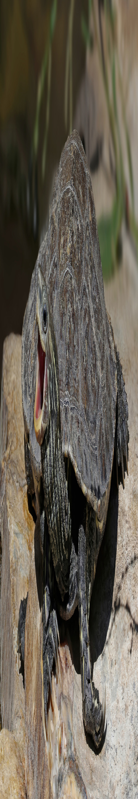
Tamaño:
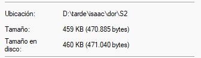
Exportada a JPEG 500 px con 75 de calidad:
Tamaño:
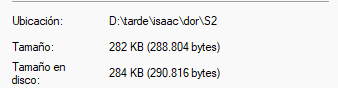
Exportada a JPEG 500 px con 50 de calidad:
Tamaño:
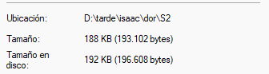
Exportada a JPEG 500 px con 25 de calidad:
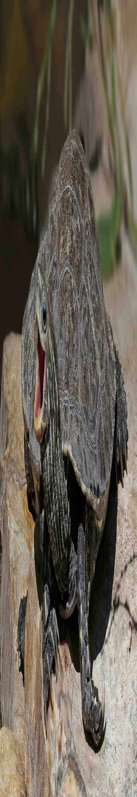
Tamaño:
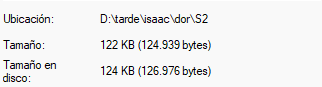
Exportada a JPEG 500 px con 0 de calidad:
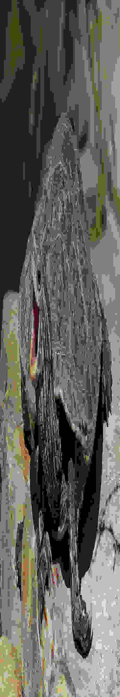
Tamaño:
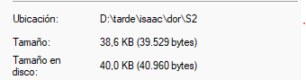
Tareas 6: Comparar GIF y PNG